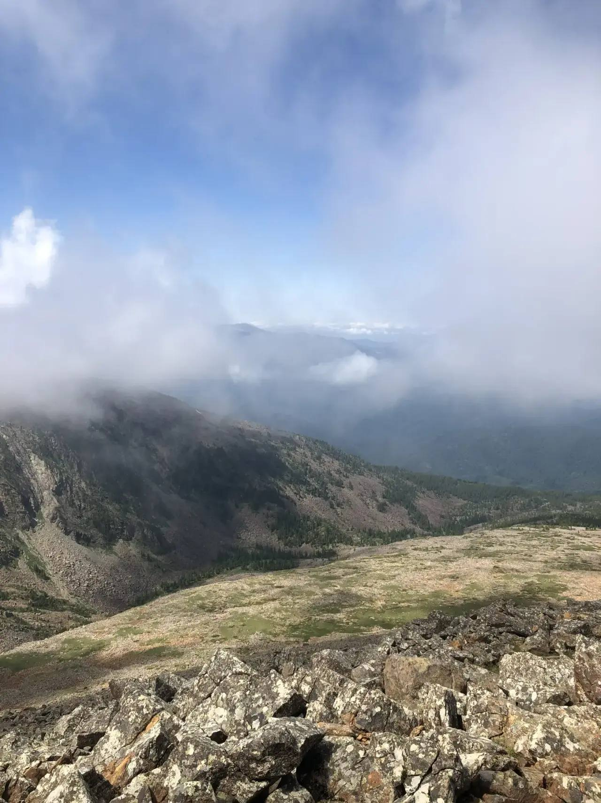

Ширинские озёра
Одно из самых популярных направлений Хакасии для поездки на автомобиле. Озёра, степные пейзажи и спокойная дорога из Абакана делают это место отличным вариантом для отдыха.
Подобрать автомобильТвоё Путешествие
Подберите маршруты по Хакасии для путешествий на автомобиле: озёра, горы, природные достопримечательности и идеи поездок из Абакана на день, выходные или несколько дней.
Путешествия по Хакасии на машине — один из самых удобных способов увидеть озёра, горы и природные достопримечательности региона. Из Абакана доступны маршруты на один день, выходные и длительные поездки.
RioCar объединяет аренду автомобилей и готовые маршруты по Хакасии, чтобы вы могли заранее спланировать поездку: выбрать направление, рассчитать время в пути и подобрать подходящий автомобиль под маршрут.
Посмотрите популярные маршруты или подберите автомобиль для поездки.
Идеи для поездок из Абакана на машине: озёра, горы, смотровые точки, природные достопримечательности и маршруты на день или выходные.
Одно из самых популярных направлений Хакасии для поездки на автомобиле. Озёра, степные пейзажи и спокойная дорога из Абакана делают это место отличным вариантом для отдыха.
Подобрать автомобиль
Одна из самых известных достопримечательностей Хакасии. Подходит для поездки на машине из Абакана: удобная дорога, впечатляющий вид и интересная точка для короткого путешествия.
Подобрать автомобиль
Историко-археологический комплекс в Хакасии с панорамными видами. Подходит для поездки на машине из Абакана: спокойная дорога, открытые пространства и атмосферное место для прогулки.
Подобрать автомобиль
Горный район в Хакасии с дикой природой и панорамными видами. Подходит для поездки на машине из Абакана: живописная дорога, перевалы и ощущение настоящего путешествия.
Подобрать автомобиль
Уникальная карстовая пещера в Хакасии с подземными залами и кристаллами. Подходит для поездки на машине из Абакана и необычного путешествия с атмосферными природными локациями.
Подобрать автомобиль
Одно из самых живописных направлений рядом с Хакасией. Подходит для поездки на машине из Абакана: большие расстояния, красивые берега и ощущение настоящего «сибирского моря».
Подобрать автомобиль
Одна из самых масштабных достопримечательностей Хакасии. Подходит для поездки на машине из Абакана: живописная дорога, горные пейзажи и впечатляющая инженерная конструкция.
Подобрать автомобиль
Живописное направление в Хакасии с горными озёрами и природными ландшафтами. Подходит для поездки на машине из Абакана и путешествия с яркими впечатлениями и сменой пейзажей.
Подобрать автомобиль
Природный парк с горами, озёрами и известными маршрутами. Подходит для поездки на машине из Абакана: длинная дорога, живописные перевалы и одно из самых красивых мест в регионе.
Подобрать автомобильОпределитесь, куда поехать в Хакасии: озёра, горы или природные достопримечательности рядом с Абаканом.
Постройте маршрут, отметьте точки остановок и рассчитайте время в пути для комфортного путешествия на машине.
Подберите автомобиль под маршрут: для города, трассы, поездки по Хакасии или дальнего путешествия.
Забронируйте автомобиль и отправляйтесь в путешествие по Хакасии с готовым маршрутом и понятным планом.
Выберите маршрут, подберите автомобиль для поездки из Абакана и отправляйтесь к озёрам, горам и красивым местам Хакасии.